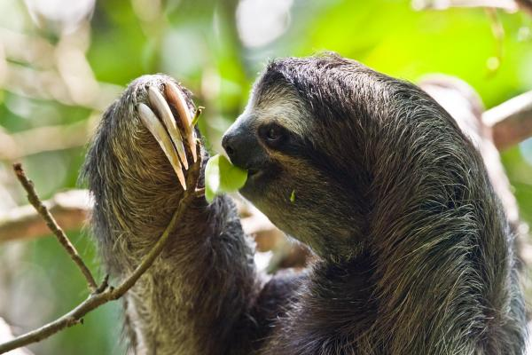

Sur notre planète, vivent les paresseux, une espèce très originale du monde animal, ils gardent le sourire en permanence et sont très doués pour ne rien faire.Ce sont des mammifères arboricoles d’Amérique du Sud et d’Amérique centrale qui constituent le sous-ordre des Folivora.Des animaux de taille moyenne au mode de vie spéciale.
Régime alimentaire
Le paresseux se nourrit essentiellement de feuilles coriaces comme celle du cecropia, dont il digère très lentement la cellulose, mais également des jeunes pousses, des petites branches, des bourgeons, des fleurs, des fruits et des racines tubéreuses. Il mange aussi des insectes et parfois même de petits animaux, comme des oisillons. Il ne se désaltère pas et trouve l'eau nécessaire dans les végétaux qu'il ingère.Son métabolisme est très lent, à peine de 40 à 45% de celui d'un mammifère de même taille. Son estomac compartimenté contient des bactéries digérant la cellulose des plantes. La digestion de certains aliments prend parfois près d'un mois. Il consomme les végétaux que les autres animaux ne mangent pas.
Sommeil
Au lieu des 16 heures de sommeil quotidien (pour ceux en captivité), c'est une moyenne de 9,63 heures qui a été mesurée (pour les paresseux vivant dans la nature). L'analyse des données, qui montrent simultanément le mouvement des animaux et leur tonus musculaire, a permis de reconstituer précisément les phases de leurs périodes de sommeil, d'après l'étude de Niels Rattenborg, un spécialiste du sommeil des oiseaux à l'Institut Max Planck (Starnberg, Allemagne).
Constitution du paresseux
Le paresseux est un mammifère arboricole. Il mesure entre 45 et 75 cm, pour un poids d'environ 4 kilos.
Le poil long (15 cm), raide et rêche, tombe du ventre vers le dos et sa couleur varie du brun grisâtre au beige.Il possède deux doigts aux pattes antérieures et trois aux pattes postérieures. Chaque doigt se termine par une griffe recourbée et puissante (jusqu'à 7 cm).Il possède 18 dents sui sont dépourvues d'émail et poussent constamment.
Ces 9 vertèbres cervicales lui permettent de tourner la tête à 270 degrés. Sa tête est ronde, son nez retroussé et ses oreilles peu développées. Il possède également une queue très courte.
Le paresseux vit entre 30 et 50 ans dans la nature (mais atteint rarement les 30 ans en captivité).
Signes particuliers:
Le paresseux, dont la lenteur lui a donné son nom, passe son temps suspendu à l'envers dans les arbres. Il ne descend de sa branche qu'une fois par semaine pour faire ses besoins. Sa lenteur est une technique de camouflage : cela lui permet de ne pas se faire repérer par ses prédateurs. Contre toute attente, le paresseux est un très bon nageur.
Cri du pareseux
Pendant la saison des amours, la femelle paresseux pousse des cris stridents, équivalents à "aïe aïe". Les mâles, eux, sont réputés très silencieux. Toutefois, mâles et femelles peuvent émettre des sifflements aigus pour communiquer ou défendre leur territoire. Le jeune paresseux, notamment, est capable de faire entendre un sifflement très pur en guise d'appel au secours.
Accouplement
La femelle atteint la maturité sexuelle à trois ans et le mâle, vers quatre ou cinq ans. Le cycle de reproduction est ensuite de 14 à 16 mois. Durant la saison des amours, le paresseux émet un cri plaintif. Le mâle attire la femelle en marquant son territoire avec son odeur. Durant l'accouplement, les partenaires s'enlacent pendant 48 heures. La gestation dure de 10,5 à 11 mois. La femelle met un seul petit au monde (qui pèse de 300 à 400 g), qu'elle élève seule. Le jeune s'accroche à la fourrure ventrale de sa mère durant une période de 6 à 9 mois, puis la quitte. Pendant toute sa vie, il ne mangera que ce que sa mère lui aura fait goûter.
Habitat
Le paresseux à deux-doigts austral vit dans les forêts tropicales de l'Amérique du Sud, à l'est des Andes, notamment en Colombie, en Équateur et dans le bassin amazonien du Brésil. Essentiellement arboricole, il descend rarement au sol. Il vit très haut dans les arbres de la forêt tropicale (la canopée). On le trouve jusqu'à une altitude de 2 100 m.
Prédateurs
Le paresseux se nourrit essentiellement de feuilles coriaces comme celle du cecropia, dont il digère très lentement la cellulose, mais également des jeunes pousses, des petites branches, des bourgeons, des fleurs, des fruits et des racines tubéreuses. Il mange aussi des insectes et parfois même de petits animaux, comme des oisillons. Il ne se désaltère pas et trouve l'eau nécessaire dans les végétaux qu'il ingère.Son métabolisme est très lent, à peine de 40 à 45% de celui d'un mammifère de même taille. Son estomac compartimenté contient des bactéries digérant la cellulose des plantes. La digestion de certains aliments prend parfois près d'un mois. Il consomme les végétaux que les autres animaux ne mangent pas.